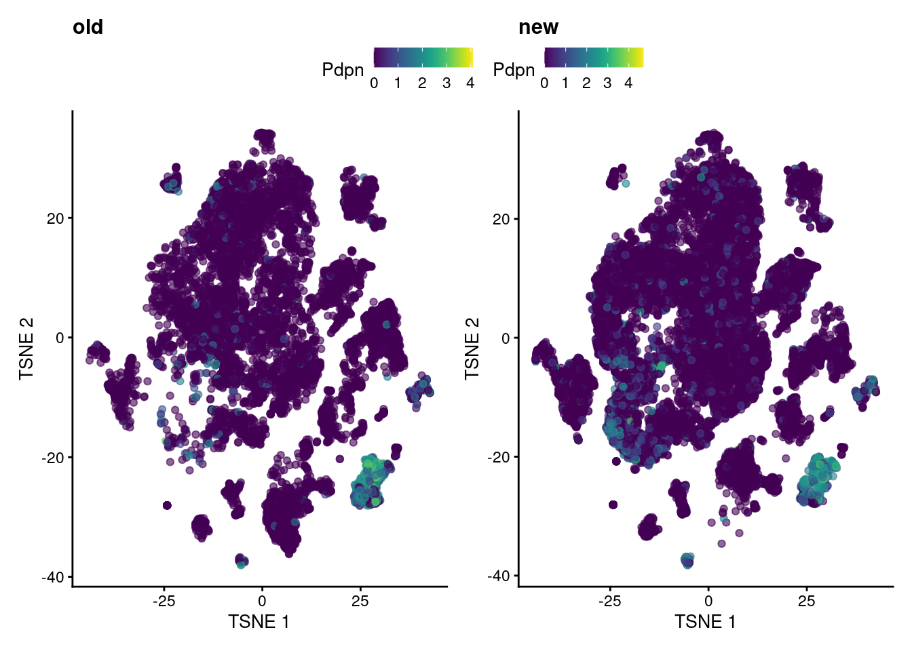

library(dplyr)
library(batchelor)
library(scater)
library(scran)
library(SingleCellExperiment)
library(patchwork)compare tumor YUMMER
Sequencing comparison
Compare cells from different sequencing runs.
Library
Data
Objects combine sequencing runs within tumor or lymphnode samples and tumor type (YUMM/YUMMER)
OBS: Objects are large run separately and clear complete memory afterwards, if run locally. Uncomment relevant lines.
#sce <- readRDS("../../data/seq_Nov/objects/sce_tumor_yumm_combined.rds")
#sce <- readRDS("../../data/seq_Nov/objects/sce_ln_yumm_combined.rds")
sce <- readRDS("../../data/seq_Nov/objects/sce_tumor_yummer_combined.rds")
#sce <- readRDS("../../data/seq_Nov/objects/sce_ln_yummer_combined.rds")Cell numbers
Prox1 or Pecam1 & Pdpn expressing cells
cell_gene_count <- function(sce, gene){
length(which(counts(sce)[gene, ] > 2))
}
cell_gene_comb <- function(sce, gene1, gene2, gene3){
length(which(counts(sce)[gene1, ] > 2 & counts(sce)[gene2,] > 2 |
counts(sce)[gene3, ] > 2))
}
print("Number cells with >2 Prox1 in both experiments:")[1] "Number cells with >2 Prox1 in both experiments:"cell_gene_count(sce, "Prox1")[1] 990print("Number cells with >2 Prox1 OR >2 Pdpn AND Pecam1 in both experiments:")[1] "Number cells with >2 Prox1 OR >2 Pdpn AND Pecam1 in both experiments:"cell_gene_comb(sce, "Pdpn", "Pecam1", "Prox1")[1] 1061print("Number cells with >2 Prox1 in old experiments:")[1] "Number cells with >2 Prox1 in old experiments:"cell_gene_count(sce[, sce$experiment %in% "old"], "Prox1")[1] 653print("Number cells with >2 Prox1 in new experiments:")[1] "Number cells with >2 Prox1 in new experiments:"cell_gene_count(sce[, sce$experiment %in% "new"], "Prox1")[1] 337print("Number cells with >2 Prox1 OR >2 Pdpn AND Pecam1 in old experiment:")[1] "Number cells with >2 Prox1 OR >2 Pdpn AND Pecam1 in old experiment:"cell_gene_comb(sce[,sce$experiment %in% "old"], "Pdpn", "Pecam1", "Prox1")[1] 690print("Number cells with >2 Prox1 OR >2 Pdpn AND Pecam1 in new experiment:")[1] "Number cells with >2 Prox1 OR >2 Pdpn AND Pecam1 in new experiment:"cell_gene_comb(sce[,sce$experiment %in% "new"], "Pdpn", "Pecam1", "Prox1")[1] 371Visualize new old experiment
Pdpn
p1 <- plotReducedDim(sce[,sce$experiment %in% "old"],
dimred="TSNE",
colour_by="Pdpn") + ggtitle("old")
p2 <- plotReducedDim(sce[,sce$experiment %in% "new"],
dimred="TSNE",
colour_by="Pdpn") + ggtitle("new")
wrap_plots(list(p1,p2), nrow = 1) +
plot_layout(guides = "collect") &
theme(legend.position = "top")
Prox1
p1 <- plotReducedDim(sce[,sce$experiment %in% "old"],
dimred="TSNE",
colour_by="Prox1") + ggtitle("old")
p2 <- plotReducedDim(sce[,sce$experiment %in% "new"],
dimred="TSNE",
colour_by="Prox1") + ggtitle("new")
wrap_plots(list(p1,p2), nrow = 1) +
plot_layout(guides = "collect") &
theme(legend.position = "top")
Pecam1
p1 <- plotReducedDim(sce[,sce$experiment %in% "old"],
dimred="TSNE",
colour_by="Pecam1") + ggtitle("old")
p2 <- plotReducedDim(sce[,sce$experiment %in% "new"],
dimred="TSNE",
colour_by="Pecam1") + ggtitle("new")
wrap_plots(list(p1,p2), nrow = 1) +
plot_layout(guides = "collect") &
theme(legend.position = "top")